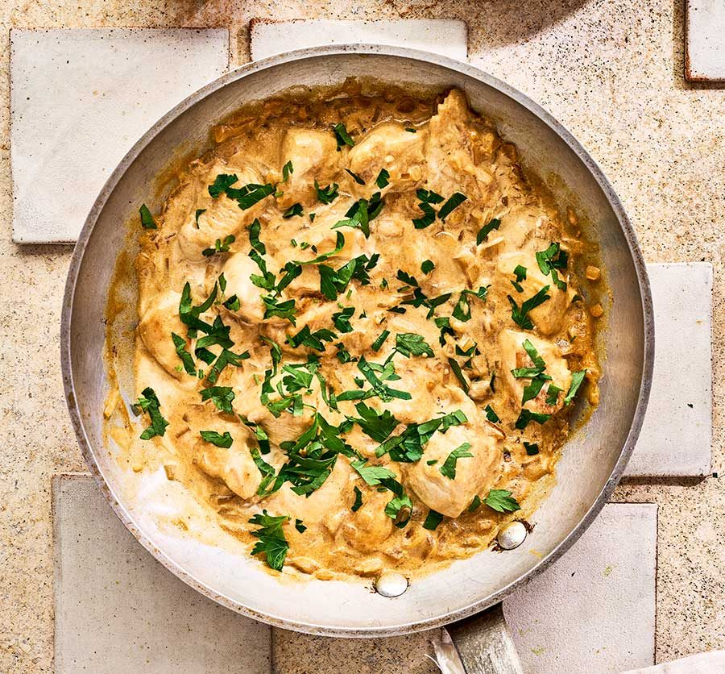

Chicken Stroganoff
Home
Chicken Stroganoff

Introduction
Beef Stroganoff is a retro classic we’ll love forever. However, a really great Beef Stroganoff does involve taking the time to slice the beef super thinly, as well as some deftness to ensure the beef is seared to perfection yet still juicy on the inside.
Chicken Stroganoff, on the other hand, requires considerably less effort. This recipe makes 4-5 individual servings.
Recipe
Ingredients
Chiken:
- 600g of chicken thighs
- 1 tsp of garlic powder
- salt and pepper to taste
- 1 tbsp of olive oil
Gravy:
- 1 large onion, chopped
- 300g of mushrooms, sliced
- 3 tbsp of butter
- 2 tbsp of flour
- 2 cups of beef broth
- 1 tbsp of Dijon mustard
- 2/3 cup of sour cream
Directions
- Sprinkle chicken with garlic powder, salt and pepper on both sides
- Heat oil in a large skillet over medium heat. Place chicken in skillet smooth side down.
- Press down lightly with with spatula. Cook for 4 minutes until golden.
- Turn and press lightly with spatula. Cook for 2 minutes.
- Remove chicken onto a plate.
- Turn heat up to medium high. Add butter, melt. Then add onions, cook for 1 minute, then add mushrooms.
- Cook mushrooms until golden. Scrape bottom of fry pan to get all the golden bits off - this is flavour!.
- Add flour, cook, stirring, for 1 minute.
- Add half the broth while stirring. Once incorporated, add remaining broth.
- Stir, then add sour cream and mustard. Stir until incorporated - don’t worry if it looks split, sour cream will “melt” as it heats.
- Bring to simmer ,then reduce heat to medium low. Once it thickens to the consistency of pouring cream (3 minutes), adjust salt and pepper to taste.
- Add chicken back in (including plate juices). Simmer for 1 minute, then remove from stove. Enjoy!
About us